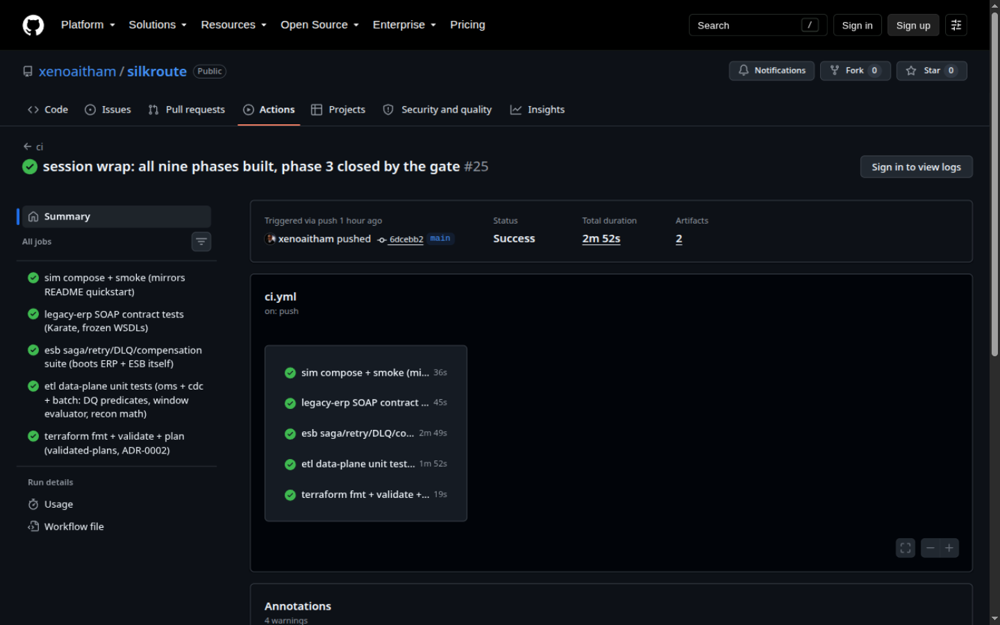
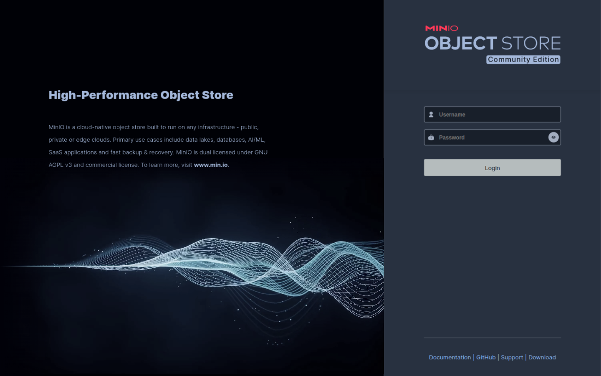
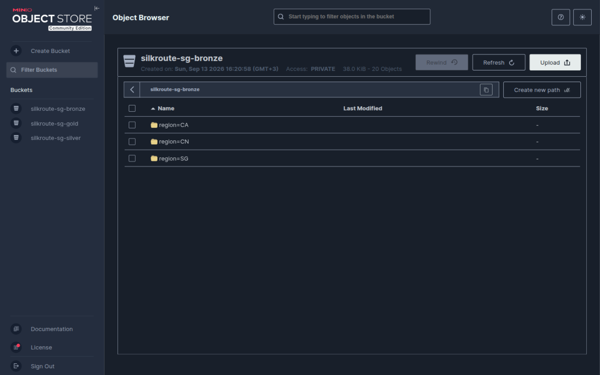
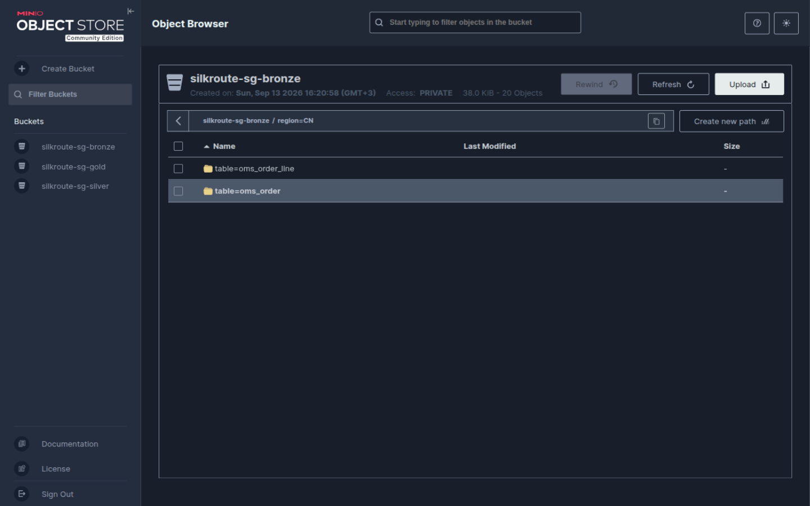
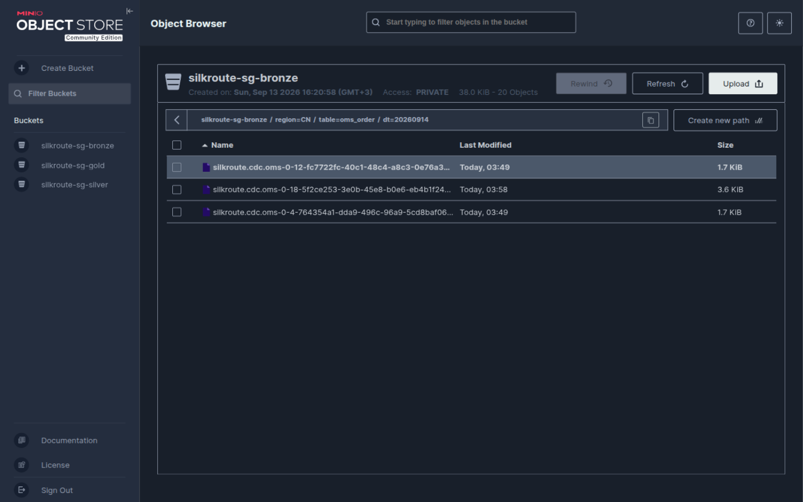
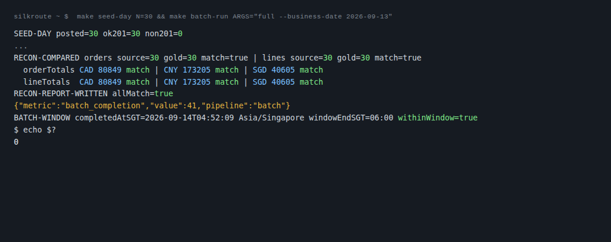
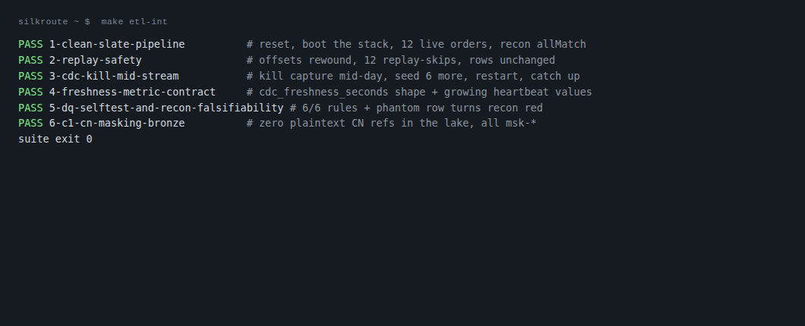

A multi-region enterprise integration platform: SOAP mediation into an untouchable legacy ERP, change data capture, and a governed data lake. Everything on this page runs in docker on one machine.
Every push runs five checks: the compose stack and its smoke test, the SOAP contract suite against the frozen WSDLs, the ESB fault-injection suite, the data-plane unit tests, and the Terraform landing-zone validation.

All five checks green. The run is reproducible: every job maps to a make target, and the evidence ledger pins the commit each verdict was rendered on.
The data lake, partitioned by region
Orders flow: REST facade -> saga into the SOAP ERP -> Kafka events -> MySQL (OMS) -> Debezium reads the binlog -> Kafka -> bronze objects in object storage. Chinese-market orders are pseudonymized at the integration layer, and every bronze object carries its region in the key.

The object store console. This is MinIO standing in for OSS in the local runtime; the same S3 API calls target the cloud bucket family when an account exists.

The bronze bucket. Hive-style partitioning: region=CA, region=CN, region=SG. The residency rule is visible right in the key layout - nothing from the CN partition lands outside its prefix.

Inside region=CN. One prefix per source table. Customer references here are the masked msk-* pseudonyms, never plaintext - a checked property, not a promise.

Raw change events, write-once. Each object is a batch of Debezium envelopes straight from the binlog, keyed by topic, partition, and offset. There is no update or delete code path in the writer.
Proof, not promises
Two of the runs behind the numbers. The ledger entry for each carries the exact command to reproduce it.

A seeded order day, reconciled. 30 real orders through the live saga, then source-versus-gold: counts and money totals match per currency to the minor unit, and the batch finishes inside the 06:00 Singapore window.

The integration suite. Replay safety, a capture process killed mid-stream and restarted with zero loss and zero duplicates, the freshness metric contract, data-quality rules that catch their own fixtures, and a reconciliation that goes red when stabbed.
Run it yourself
Docker, jq, curl, and a JDK. From a clean checkout:
make up && make smoke # six-service sim stack, falsifiable smoke
./mvnw -B -f apps/legacy-erp/pom.xml clean package
./mvnw -B -f apps/esb/pom.xml clean package
make esb-run # ERP on 18080, ESB on 18081, PID files
scripts/demo-order.sh # one order through the full saga, HTTP 201
make plan-sg # Terraform plan: 87 to add, creates nothing
The data plane in one command each:
make etl-setup # databases, users, topics, buckets (idempotent)
make oms-run && make cdc-run # event store + binlog capture + bronze writer
make seed-day N=30 # 30 live orders through the ESB
make cdc-stop
make batch-run ARGS="full --business-date $(date -u +%F)"
# silver -> gold, DQ gates, reconciliation report
make etl-int # the six-scenario suite, ~4 minutes
Honest boundaries, stated plainly: the runtime evidence here is the local docker environment. The AliCloud landing zone is
written, validated, and planned against the real provider - and never applied, because no account exists. Cloud-only
behaviors (log ingestion, alerts, runtime residency enforcement) are labeled verify-at-activation throughout the docs.
The scenario company is fictional; this is a self-directed reference implementation.